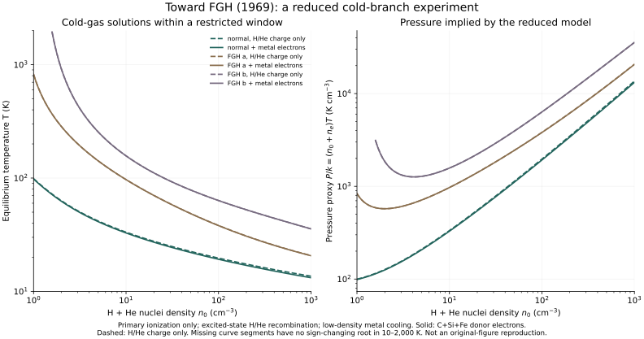

Chapter 02 / An equilibrium experiment
Find a cold branch.
Keep the assumptions visible.
The historical heating and cooling terms can now be combined with ionization and charge balance. This first coupled calculation explores how elemental depletion and metal-donor electrons change cold-gas equilibria.
This is a reduced model, not a reproduction of FGH Figures 1 or 2. It omits secondary ionization and several other processes. Numerical validation establishes the solution of the stated equations; it does not establish their cold-temperature accuracy or agreement with the complete historical calculation.
Six model choices, one explicit temperature window.



At n₀ = 100 cm⁻³, the version with C+Si+Fe electrons gives approximately 19.22 K for normal abundances, 38.07 K for case a, and 63.34 K for case b. These are results of this reduced model. The calculation has not been tuned to match an original curve.
Depletion reduces the available metal cooling. At the same density the gas must reach a higher temperature before cooling balances heating. The electron-donor comparison isolates a second input choice while leaving the other assumptions fixed.
What is solved?
At each trial density and temperature, a monotone bisection solves charge neutrality and the primary ionization/recombination equilibria of H and He. A logarithmic temperature scan identifies sign changes in the net energy loss; bisection then refines each bracket. All sign-changing roots found are retained in the CSV.
ne = n(H II) + n(He II) + 2n(He III) + nmetal,e
Γ = 1.4 × 10⁻¹¹Q(x)ζntarget + 4.6 × 10⁻¹⁰neζ
Λmetals + Λrecombination + Λfree-free = Γ
Here ζ = 4 × 10⁻¹⁶ s⁻¹, x = ne/n(H I), Q = (1+130x)/(1+57x), and ntarget = n(H I)+n(He I)+n(He II). This target sum differs from n₀, which counts all H+He nuclei. Heating and cooling are volumetric rates in erg cm⁻³ s⁻¹. The pressure proxy (n₀+ne)T omits trace-element nuclei.
H/He recombination uses the excited-state fits obtained by subtracting Hjellming’s ground-state coefficients from his total coefficients. Recombination kinetic-energy loss follows his energy-weighted definition. The hydrogenic He approximation is a historical approximation whose accuracy at cold-gas temperatures remains to be assessed.
Read the model before interpreting the curves.
- Ionization: equal primary rates for H I, He I, and He II; no secondary-electron ionization or thermal collisional ionization.
- Cooling: tabulated metal channels, recombination, and free-free emission. Thermal H/He excitation, molecules, grains, and stellar heating are absent. Blank Table 1 channels are omitted inputs, not measured zeros.
- Populations: low-density excitation with all C, Si, and Fe singly ionized and O neutral. Each listed transition uses the whole elemental population; no level statistical-equilibrium calculation is included.
- Composition: He is 10% of H+He nuclei. Per million H nuclei, C=300, O=670, Si=30, Fe=8, transcribed from Field et al. (1968), Table 1, which cites Allen (1963). We have not directly checked Allen’s book.
- Depletion: the FGH Letter divisors are selected explicitly. The different values in the companion GHF paper remain recorded in the source audit.
- Search: roots outside 10–2,000 K are outside this calculation. Tangential roots can evade a sign-change scan. Scan refinement checks the reported numerical roots, without proving global completeness.
Curves under these assumptions do not establish the original two-phase pressure interval or a warm branch. Later microphysics will be tracked through Wolfire and GOW references.
Reproduce this experiment
Download the equations and the budgets.
Keep these five files in one directory. The CSV contains temperature, electron and H/He populations, donor electrons, pressure proxy, individual energy-loss terms, and normalized balance residuals.
python3 -m venv .venv
.venv/bin/python -m pip install -r requirements.txt
.venv/bin/python cold_branch.py --output outputAll 66 numerical checks pass: an independent pure-H quadratic solution, conservation of nuclei and charge, ionization and thermal balances, recombination limits and scaling, and a doubled temperature scan. Errors, tolerances, input hashes, and runtime versions appear in the validation report.
Sources and the next comparison.
FGH (1969), the Letter ↗
GHF (1969), detailed model ↗
Hjellming (1966), pp. 425 and 435 ↗
Field et al. (1968), Table 1, p. 958 ↗
Next steps are to audit the secondary-electron balance, level populations, and warm-gas reaction inputs, then compare against the historical figures. The code already separates the density definitions needed for that comparison.
Correction to the initial ingredient release: equation (23)’s target-density sum was mislabeled as n₀ in the text and CSV header. The label is corrected; normalized coefficient values are unchanged. Code and generated-data licenses remain unselected.